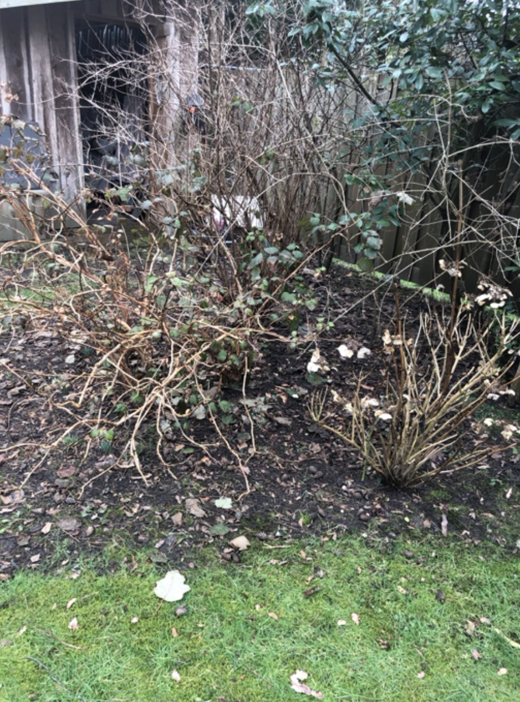
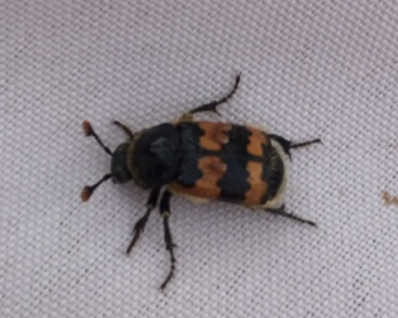
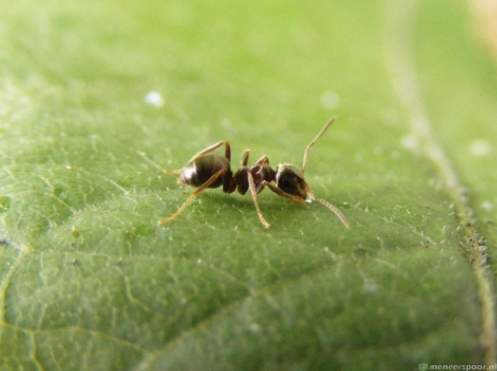
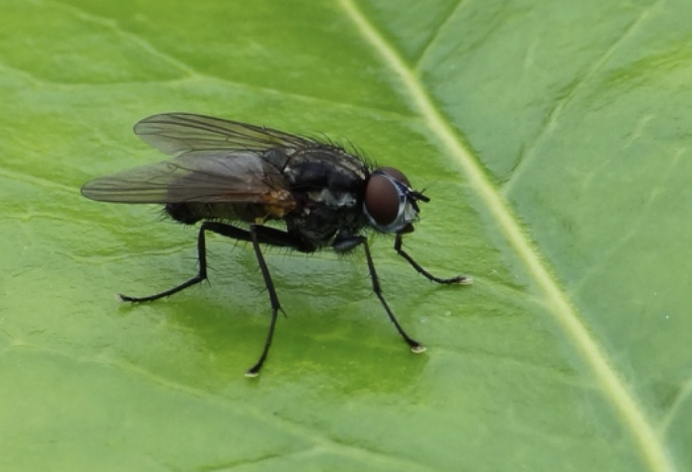
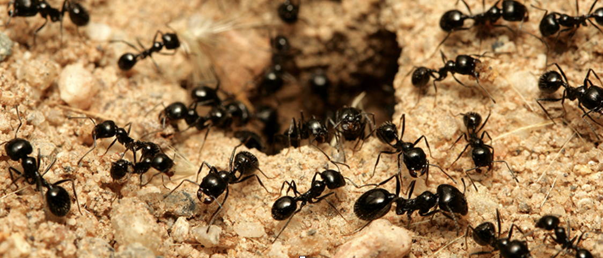

lente
Maart
April
Mei
Mijn (nieuwe) organismes
worm
kever
bij
hommel
wesp
zweefvlieg
tor
mier
vlieg
bladluis
Planten
Hortensia
Latijnse naam:
hydrangea quercifolia

callicarpa
Latijnse naam:
callicarpa americana

wijnstok
Latijnse naam:
vitis vinifera
suikeresdoorn
Latijnse naam:
acer rubrum

liguster
Latijnse naam:
ligustrum japonicum
Dieren
slak
Latijnse naam:
cochlea

kat
Latijnse naam:
felis catus

spreeuw
Latijnse naam:
sturnus vulgaris

egel
Latijnse naam:
erinaceus europaeus
pissebed
Latijnse naam:
isopoda

Levenscyclus planten
Paardenbloem
De paardenbloem begint bij een zaadje van een andere paardenbloem die mee wordt genomen door de wind. Als dat zaadje land ergens op de grond wordt het een echt zaadje en gaat het door water en de aarde een beetje onder de grond zitten en groeien. Als de plant zo groot is zal het van geel naar een pluizenbol veranderen. Dit gebeurt doordat de bloem dichtslaat en het onderste deel van de bloem openslaat waaruit de pluizenbol komt.
Liguster
De liguster begint net als alle andere planten als zaadje aan de plant dat zaadje valt waardoor dat zaadje in de grond kan groeien. Als de plant volgroeit is laat het zaadjes vallen daardoor kunnen die zaadjes weer door groeien en zo gaat het door.
Levenscyclus dieren
Kever
Een kever begint als eitje. Dat eitje kan er wel 3 tot 4 maanden over doen om uit te komen. Als het eitje dan eenmaal is uitgekomen gaat het eten tot het een volgroeide meelworm is. Een volgroeide meelworm eet veel als het genoeg heeft gegeten verandert hij in een pop. Als die pop uit komt komt er een volgroeide kever uit. Die paart weer met een andere kever en zo gaat het door.
Slak
Een slak begint ook bij een eitje. Na ongeveer 16 dagen komt het slakje uit het ei en gaat opzoek naar eten als het genoeg eten heeft gevonden en de slak volgroeid is gaat het opzoek naar een paar partner. Dan komen er weer eitjes en dan begin je weer bij het begin.
Invloed van mens en milieu op 10 populaties
Slak
De slak leeft vooral in kleine warme plekjes in niet zichtbare plekken maar door de opwarming van de aarde wordt het steeds warmer waardoor ze ook steeds meer op zichtbare plekken gaan zitten. De slak kan daardoor ook makkelijker gepakt worden door andere dieren. De slak leeft soms ook in het huis van iemand omdat het daar ook warm is, de mens gooit het dier dan meestal naar buiten omdat ze het maar vies vinden, de beesten moeten nu opzoek naar een nieuwe schuilplaats.
Worm
De worm zit meestal onder de grond in warme vochtige plekken. Door de opwarming van de aarde wordt het steeds warmer waardoor wormen ook meer naar de oppervlakte komen omdat het dan ook warm is boven de grond, daardoor kunnen dieren die wormen ook makkelijker pakken als voedsel. De mens geeft de worm eigenlijk een beter leefgebied door planten en bomen te plaatsen daardoor kunnen ze ook lekker veilig schuilen onder de bladeren waar minder dieren ze kunnen pakken omdat het overdekt is.
Bij
De bij leeft in een groep. Die groep creëert warmte in de bijenkorf, maar als het buiten warmer wordt wordt het binnen ook warmer het raakt binnen dus te warm voor de bijen. De koning kan ook geen eitjes leggen want die doet dat bij een temperatuur van 35 graden. De mens vindt de dieren vooral irritant ze willen dus gelijk een bij dood slaan als ze er een zien omdat ze bang zijn dat ze gaan steken. De populatie neemt daarom af.
Kever
Kevers blijven meestal in de grond tot het 19 graden wordt, doordat het warmer wordt hoeven ze minder lang ondergronds te blijven. Ook wisselen de dieren af met het jagen en zonnebaden zodat hun lichaamstemperatuur op 35 graden blijft dat hoeft dus meer omdat het steeds warmer wordt. De mens maakt ook het leefgebied van de kevers kapot om bijvoorbeeld huizen of andere dingen te bouwen.
Egel
Een egel leeft meestal in kleine overdekte plaatsen waar ze veilig zijn voor de rest van de dieren buiten. De egel neemt altijd tijdens de winter een winter slaap als het koud is, dat gaan ze ook minder doen omdat de winters steeds zachter worden. De mens maakt meestal onbewust huisjes en schuilplaatsen voor egels door bijvoorbeeld een terras of veranda te bouwen waar ze onder kunnen schuilen.
Mier
Mieren zijn koudbloedig dat betekent dat als het koud is hun lichaamstemperatuur ook omlaaggaat. Soms is het te koud voor de mier waardoor ze minder actief worden of zelfs te weinig. De mens houdt niet van mieren, als ze mieren zien gebruiken ze meestal een gif om ze weg te halen.
Hortensia
De meeste hortensia's zijn winterhard, de knoppen zijn goed bestand tegen de winterkou. Het enige gevoelige moment is in het voorjaar als de knoppen gaan zwellen, want dan worden de planten vorstgevoelig. Dit gebeurt minder door de opwarming van de aarde. Heel veel mensen hebben een hortensia in de tuin omdat ze het mooi vinden of om de bijen en dieren te helpen.
Suikeresdoorn
De suikeresdoorn leeft in een wat koeler klimaat met mildere zomers. Doordat het steeds warmer wordt kunnen de planten minder makkelijk overleven. Dit is ernstig voor de soort en voor de dieren die er voedsel uit halen. Veel mensen nemen vaak een suikeresdoorn in hun tuin waardoor de plant ook meer kan groeien dat is dan wel weer goed.
Liguster
De liguster kan heel goed overleven in dit soort weer en milieu. Daardoor zijn er ook best veel van omdat ze makkelijk kunnen overleven. Veel mensen nemen daardoor ook een liguster omdat het niet heel veel onderhoudt nodig heeft.
Beschrijving van de relaties tussen populaties
Veel planten in mijn 4 m2 geven bloemen daaruit kunnen bijen en wespen nectar halen waardoor ze weer kunnen eten. Mieren komen er heel veel doordat ze onder de grond niet heel veel andere dieren tegen komen waardoor ze lekker hun gang kunnen gaan. Soms komen ze een worm of kever tegen die slopen dan meestal het huisje van de mier. Wormen worden ook opgegeten door vogels als ze boven de grond zijn. Daardoor kunnen de mieren ook beter hun gang gaan. Kevers en lieveheersbeestjes hebben niet heel veel vijanden doordat ze een eksoskelet hebben en makkelijk weg kunnen vliegen daarom zijn er ook best veel van in mijn tuin. Slakken worden meestal opgegeten door vogels omdat daar veel voedingsstoffen in zitten. De slak is daarom ook meestal in een klein schuilplaatsje. De kat eet eigenlijk wel alle dieren van kevers tot vogels. Daarom is dat ook een groot gevaar voor de meeste dieren in de tuin. De planten hebben daar eigenlijk geenlast van. Pissebedden eten veel planten daardoor daardoor zijn de bladeren laag bij de grond ook meer kapot dan de bladeren boven de grond omdat de pissebedden daar minder makkelijk kunnen komen. De pissebedden hebben eigenlijk ook nergens last van omdat ze ook een eksoskelet hebben die hun beschermt tegen veel dingen. Ze leven vooral onder stenen of stronken hout.
Mogelijk plagen in 4 m2
Lieveheersbeestjes zijn een grote plaag omdat die veel planten eten en daarvan leven. Ze kunnen ook wel tegen hitte daardoor blijven ze makkelijker leven. Ze eten veel planten waardoor die minder snel kunnen groeien en zich kunnen voortplanten.
Kevers zijn eigenlijk gelijk aan lieveheersbeestjes, ze eten hetzelfde en kunnen ook tegen de hitte. Daarom zie ik deze insecten steeds meer verschijnen in mijn 4 m2. Kever en lieveheersbeestjes gaan meestal dood door natuurlijke dood, soms kan het ook zijn dat een ander beest zoals mijn kat of een vogel achter ze aan zit. Meestal kunnen ze wegkomen maar soms hebben ze ook het ongeluk om wel gepakt te worden. Pissebedden zijn er ook heel veel alleen doen die niet heel veel tegen de planten ze kunnen alsnog irritant zijn voor mens en andere dieren. Ze leven meestal onder een steen of stronk maar soms kunnen ze ook er onderuit komen om eten te halen. Als dit gebeurt kunnen er dingen op hem vallen of er kunnen mensen op staan waardoor ze geplet worden.
Mieren zijn ook een groot probleem. Omdat ze makkelijk een nest kunnen bouwen tussen stenen en in de grond kunnen ze minder makkelijk doodgaan. Soms heb je ook (wat laatst in mijn 4 m2 was) dat ze een open nest hebben waar ze makkelijk in en uit kunnen gaan bijvoorbeeld tussen een gleuf. Hierbij heb je veel meer last van de dieren omdat ze overal lopen en veel eten willen om ze lang mogelijk te overleven. Ze gaan dan in groepen naar een plant of andere voedselbron waar ze eten halen. Mieren gaan eigenlijk niet dood door een beest omdat ze in de grond zitten. Ze gaan meestal dood doordat ze buiten komen en een dier ze pakt of omdat er iets in hun nest komt wat ook gevaarlijk is.
Bladluizen kunnen vanaf het voorjaar veel schade aanrichten aan allerlei planten. Bladluizen voeden zich met plantensappen, die ze met hun zuigende monddelen uit het blad halen. De sappen van planten bevatten veel suikers en weinig eiwitten. Dit betekent dat bladluizen veel sap uit het blad moeten zuigen om aan voldoende eiwitten te komen. De overtollige suikers scheiden ze af in de vorm van een kleverige stof. Die wordt honingdauw genoemd. Honingdauw trekt ook andere insecten aan zoals wespen, vliegen, vlinders, mieren. In de honingdauw ontwikkelt ook de schimmel Roetdauw, een zwarte laag op de bladeren. Hierdoor kan de plant niet meer voldoende licht opnemen en er ontstaat een groeiremming.
Bronnen
https://www.biocontrole.nl/plaagbestrijding/bladluizen.htmlbvj boek b
zomer
Juni
Betere uitleg over de volgende dieren
Egel
Uiterlijke kenmerken
De egel is een van de grotere insecteneters. Hij heeft een gedrongen lichaam, een spitse kop en een kleine staart, die hij verborgen houdt tussen de stekels. De kop begint breed, maar loopt spits toe naar de donkere snuit. Aan het uiteinde van de snuit bevinden zich tien paar neusharen. De oren zijn klein en nauwelijks zichtbaar. De ogen zijn klein en zwart en staan zijwaarts in het gezicht. De schedel is verlengd. De 36 tanden zijn primitief en weinig gespecialiseerd. De twee snijtanden in de onderkaak zijn groot, vrijwel plat en wijzen naar voren. Zij staan dicht bij elkaar. De tanden in de bovenkaak zijn juist puntig en staan ver uiteen. De tanden slijten snel door zand, steen en aarde die de dieren meekrijgen met het voedsel. Hierdoor zijn de tanden bij oudere dieren vaak afgebroken of zelfs verdwenen.
Alhoewel bij het lopen de buik zich dicht bij de grond bevindt, zijn de poten vrij lang, ongeveer tien centimeter van de heup naar de tenen. Tijdens het lopen houdt het dier ze zeer gebogen. Aan iedere poot bevinden zich vijf tenen, die alle voorzien zijn van een klauw.
De vachtkleur varieert van geel- en grijsbruin tot donkerbruin. Een donker V-vormig masker loopt over de snuit. De buik is grijs- tot donkerbruin, met een bruine vlek op de borst die qua grootte varieert. Hiermee is de soort te onderscheiden van de nauw verwante Oost-Europese egel (Erinaceus roumanicus), die een witte borstvlek heeft.
De kop, buik, poten, borst en keel zijn begroeid met een dunne vacht van lang, stug haar. De rug en flanken van de egel zijn bedekt met stekels, ook wel pennen genoemd. Meestal vindt men gemiddeld tussen de 5000 en 8000 stekels naargelang de bron. Deze bruingrijze stekels zijn 15 tot 25 mm lang en 1 tot 2 mm breed. Een pen is hol en bestaat uit verscheidene lagen keratine. Met een stekelkop zit de pen in de rughuid verankerd.
Winterslaap
De egel houdt een winterslaap. Hij kan slecht tegen de kou; de stekelvacht isoleert niet, waardoor een egel niet lang blootgesteld kan worden aan temperaturen lager dan 12 °C. Bovendien zal een egel weinig voedsel vinden, aangezien zijn belangrijkste prooidieren, insecten en andere ongewervelden, vanaf het najaar steeds schaarser worden.
De winterslaap duurt in gematigde streken ongeveer van oktober tot maart of april. In Scandinavië kan de winterslaap wel acht maanden duren. In zuidelijkere streken duurt de winterslaap echter veel korter: in Zuid-Europa duurt hij 0 tot 4 maanden. In Nieuw-Zeeland, waar de egel is uitgezet, duurt de winterslaap meestal een week of vier. Om zich voor te bereiden op de winterslaap legt de egel vanaf juli een vetvoorraad aan in de vorm van onderhuids vetweefsel. Dit bestaat uit wit vet, bedoeld om de winterslaap door te komen, maar ook uit bruin vet. Dit bruine vet, de 'winterslaapklier' genoemd, bevindt zich bij de schouders en wordt pas aangewend in het vroege voorjaar, bij het ontwaken. Is de vetvoorraad te karig, dan kan het dier bij dalende temperaturen zijn lichaam niet warm houden en zal het sterven.
Voortplanting
De mannelijke geslachtsorganen gaan direct na het einde van de winterslaap groeien, evenals de aanmaak van hormonen. De paartijd duurt van april of mei tot juli, soms zelfs tot begin september.
In de paartijd zoeken dieren elkaar op op een grasveld. Als twee mannetjes hetzelfde vrouwtje op het oog hebben, zullen zij met elkaar vechten door te bijten en te stoten. Het paren is een langdurig liefdesspel, dat omzichtig maar vooral ook voorzichtig gebeurt. Om het vrouwtje paarbereid te krijgen, doen de dieren een soort dans. De twee dieren gaan tegenover elkaar staan, met de snuiten tegen elkaar. Terwijl zij elkaar besnuffelen, urineren beide dieren. Het mannetje doet vervolgens pogingen om achter het vrouwtje te komen, maar die draait zich steeds van hem af. Het mannetje zal tegen het vrouwtje aan stoten met zijn snuit en poten. Vervolgens richt hij zijn hoofd op en opent hij zijn lippen ver uit elkaar. Dit spel kan uren duren en behoorlijk luidruchtig zijn.
Wanneer het vrouwtje instemt met paring drukt zij zich tegen de grond, spreidt haar achterpoten en legt haar stekels plat. Het mannetje houdt vervolgens met zijn poten haar flanken vast en met zijn bek haar hals. De paring zelf duurt enkele minuten. Tijdens de paring maken de dieren luidruchtige snuffel- en niesgeluiden
Voedsel
De egel is een insecteneter, die zijn voedsel voornamelijk in de ondergroei zoekt. Met zijn snuit spoort hij zijn prooien op tussen afgevallen bladeren, graspollen en losse aarde, terwijl zijn gehoor scherp genoeg is om prooidieren onder de grond te horen kruipen. Als hij de kans krijgt kan een egel binnen een paar uur meer dan tachtig regenwormen en/of kevers eten en ongeveer zeventig gram aan voedsel in een nacht verorberen. Vijftig gram is meer dan genoeg.
Het dieet is afhankelijk van het seizoen. In het voorjaar eten egels voornamelijk regenwormen, rupsen en kevers, maar in de zomer en het najaar voornamelijk wormen, slakken en mest- en aaskevers. Kevers worden eerst doodgebeten voordat ze worden opgegeten. Wormen worden levend gegeten. Ook insectenlarven, oorwormen, duizendpoten en pissebedden worden veelvuldig gegeten. Bij keus geeft hij de voorkeur aan zachtere ongewervelden als wormen en rupsen boven hardere als mestkevers. Bij slakken heeft hij een voorkeur voor kleinere, die hij in een keer kan doorslikken. Grotere huisslakken worden niet gegeten, waarschijnlijk omdat zij de stevige slakkenhuizen niet kunnen kraken.
Slak
Evolutie van de slak
Slakken ontwikkelden zich in zee, de vroegst bekende soorten stammen uit het late cambrium. Sommige slakachtige fossielen als Helcionella en Scenella uit het Vroeg-Cambrium worden tegenwoordig niet meer als slakken beschouwd. Het in het vroege Cambrium levende diertje Aldanella had een gedraaide schelp maar was waarschijnlijk geen weekdier. In het ordovicium waren er al verscheidene vormen van slakken in diverse typen wateren. Soorten uit het paleozoïcum behoren tot de meer primitieve weekdieren, hoewel sommige nog steeds bestaan. Tijdens het carboon hadden de slakken al de vormen en maten van de soorten die we vandaag kennen maar dat is slechts gebaseerd op de uiterlijke gelijkenis van de schelp. De voorouders van de meeste moderne slakken kwamen pas voor in het mesozoïcum. De eerste land bewonende slak is Maturipupa en duikt op in het carboon in europa. De land bewonende slakken waren echter dun gezaaid tot in het krijft, waar onder andere de bekende helix-soortenuit stammen.
In aardlagen uit het mesozoïcumen het cenozoïcum komen net iets meer fossielen van weekdieren dan andere fossielen voor. Dit is te danken aan de harde schelpen van slakken (en tweekleppigen) die goed bewaard kunnen blijven. Ze worden in allerlei soorten afzettingen aangetroffen, als het sediment maar niet ontkalkt is. Van schelpen van slakkensoorten worden ook afdrukken in oorspronkelijk zacht sediment als fossiel aangetroffen. De geologische studie van fossiele slakken en weekdieren in het algemeen geeft een beeld van de veranderingen van het milieu in het verleden.
Voedsel en vijanden
Veel op het land levende slakken eten voornamelijk planten, maar vele soorten eten ook aas, paddenstoelen en schimmels. Veel soorten zijn belangrijke opruimers die ten onrechte als schadelijk worden gezien. Sommige naaktslakken eten ook wel andere dieren, waaronder andere naaktslakken. In zee levende slakken kunnen behoren tot de planteneters, aaseters en ook vleeseters, zoals de wullk. Carnivore zeeslakken boren gaatjes in schelpen en eten het andere weekdier op.
Slakken hebben een rasp-achtige tong, genaamd radula, die bestaat uit vele duizenden kleine hoornachtige tandjes. Hiermee worden dunne laagjes weefsel van het voedsel geschraapt. De grootte, vorm en aantal tanden is dan ook aangepast op het voedsel van de slak.
Vijanden van land bewonende slakken zijn vooral vogels zoals lijsters, vooral de zanglijsters is dol op slakken en laat soms ware kerkhoven van gebroken huisjes achter. Ook sommige andere dieren eten slakken, en zijn er meestal in gespecialiseerd vanwege het niet eenvoudig te kraken huisje. Voorbeelden zijn sommige slangen en hagedissen en een aantal insectenlarven, zoals die van veel loopkevers maar ook duizendpoten, kikkers en paden, muizen en egels lusten graag slakken. Een hagedis die veel slakken eet en ook in Nederland en België voorkomt is de slang-achtige hazelworm (Anguis fragilis). Sommige dieren eten liefst naaktslakken, andere hebben liever huisjesslakken.
In zee levende slakken worden door kreeftachtigen en vissen gegeten, de bont gekleurde soorten, zoals die met een parelmoerlaag aan de binnenzijde van de schelp worden daarnaast opgevist door de mens om de decoratieve waarde, een voorbeeld van een populaire soort is de oorschelp. Het massaal opvissen van sommige soorten door de mens heeft tot plagen van hun prooidieren geleid. Het achteruitgaan van de tritonshoorn bijvoorbeeld heeft tot gevolg dat de doornenkroon een zeester, grote schade aanricht door koralen af te grazen.
herfst
Oktober

November
Planten
Hortensia
Latijnse naam:
hydrangea quercifolia
callicarpa
Latijnse naam:
callicarpa americana
wijnstok
Latijnse naam:
vitis vinifera
suikeresdoorn
Latijnse naam:
acer rubrum
liguster
Latijnse naam:
ligustrum japonicum
Dieren
slak
Latijnse naam:
cochlea
kat
Latijnse naam:
felis catus
spreeuw
Latijnse naam:
sturnus vulgaris
egel
Latijnse naam:
erinaceus europaeus
pissebed
Latijnse naam:
isopoda
Invloed van type grond op organismen
De grond op mijn 4 vierkanten meter is meestal nat en is bijna overal gewoon aarde. Insecten zoals slakken en andere kleinen beestjes vinden dat fijn omdat het lekker vochtig is. Op mijn grond leven alleen maar struiken en een boom die struiken zijn fijn voor iets grotere dieren. Ze kunnen onder een struik bijvoorbeeld schuilen. Kleinere beestjes hebben wat meer aan de blaadjes en takken als eten. De kleine insecten eten vooral larven van de bladeren en eten kleine stukjes van de takken
Invloed van water op mijn 4 m2
Op mijn 4m2 is veel water doordat de bladeren en de boom water vasthouden op de bladeren. Ik sproei het soms ook met water in de zomer als heet lang niet heeft geregend. Water is wel nodig omdat er veel planten zijn. De grond is ook heel erg vochtig door al het water. Door het water leven er veel kleine insecten en ander kleine beestjes. Die zitten meestal onder de grond waar ze lekker warm en vochtig zitten.
Voedselweb
Het geheel van voedselrelaties in een ecosysteem noem je een voedsel web. In een voedsel web komen behalve planten eters en vlees eters ook alles eters voor
Voedselpiramide
Van een voedselpiramide is de onderste laag altijd planten daar boven komen de dieren die planten eten en zo gaat het door. Onder aan zit meestal de zwakste en boven 1 vleeseter. Een voedselpiramide legt uit dat planten en dieren elkaar nodig hebben.
kat
egel spreeuw
lieveheersbeestje slak
hortensia beauty berry muursla suikeresdoorn laurier
Winter
December
Januari
Februari

Mijn biotoop
Ik woon op aardegrond, de grond in mijn tuin is vruchtbaar en er kunnen veel planten leven. De grond in mijn tuin is vochtig genoeg en wij hoeven alleen te sproei in de zomer. De tuin is ook goed verlicht door de zon, er staat niets in de weg voor de zon om bij de planten en boom te komen. De temperatuur is door de zon soms ook best hoog omdat de zon er goed bij kan.

Invloed van de mens
Mijn 4m2 was vroeger best wel zelf voorziend, de laatste tijd is dat minder door de opwarming van de aarde hierdoor moeten wij regelmatig sproeien in de tuin. Soms strooien wij ook wat mest over de planten zodat het beter groeit en het mooier wordt.
Hoe kan ik de organismen helpen
Als eerst kan ik een vogelhuisje en een huisje voor eten voor de eekhoorns neerzetten. (Bovenste vogelhuisje en onderste eekhoorn voer)
Ik kan ook eten voor de vogels neerzetten in de winter zodat ze meer eten hebben.
Hoe overleven mijn 10 organismen in de winter
planten
Hortensia
Een hortensia kan op zichzelf al goed overleven in de winter. Mijn hortensia is nog jong dus er moet een klein beetje beschutting zijn. Dit hebben wij door de schuur en de bomen al, dus daar hoefden wij niks aan te doen.
Callicarpa
Een callicarpa leeft van de bessen van zichzelf. Je moet de plant soms wel snoeien zodat het niet te groot wordt. Soms moet er ook wat kunstmest en turf toegevoegd worden zodat het groeit en zodat het bessen blijft aanmaken.
Wijnstok
De wijnstok slaapt eigenlijk alleen in de winter. Het is best raar maar het is zelfs dat het beter voor de plant is als het kouder is voor de plant en het sap in de plant.
Suikeresdoorn
De suikeresdoorn haalt water uit de bodem van de grond en heeft meestal veel water nodig om te overleven. In de winter is het vaak vochtig en hoeft de boom niet veel te doen om te overleven.
Liguster
Een liguster heeft niet veel nodig om de winter te overleven. De liguster kan net als de suikeresdoorn makkelijk aan water komen in de grond daardoor hoeft het ook niet veel te doen in de winter om te overleven.
Dieren
Slak
In het najaar over winteren ze onder bladeren of in de grond om zo de warm te blijven. In winters waar het echt heel koud wordt heb je nog kans dat de slak het niet overleeft. Als het weer warmer wordt worden de slakken weer wakker en gaan ze gelijk hun water verlies weer verminderen.
Lieveheersbeestje
De lieveheersbeestjes blijven het liefst in de winter in kleine kieren of openingen in bijvoorbeeld je huis of in een boom zitten. Ze blijven daar warm en eten in het najaar eerst heel veel zodat ze niet hoeven te eten in de winter.
Spreeuw
Spreeuwen nestelen in bomen vogelhuisjes of zelfs gebouwen. Ze eten van tevoren heel veel insectenlarven en landpootmuggen zodat ze voldoende eten hebben. Na de broedtijd verzamelen ze zich in grote slaapplaatsen
Egel
Egels houden hun winterslaap in een winternest, dat wordt gemaakt van droge bladeren. Meestal doen ze dit onder een heg, een stapel houtblokken of bijvoorbeeld onder een schuurtje. Het is niet zo dat egels aaneengesloten slapen. Soms worden ze wakker en veranderen zelfs van nest.
Pissebed
Zolang het niet vriest proberen pissebedden zo veel mogelijk actief te blijven omdat ze een kreeft soort zijn en dus gevoelig voor de kou. Ze gaan meestal met veel pissebedden opzoek naar voedsel.
Producenten, Consumenten en Reducenten.
Producenten
Hydrangea quercifolia
plant met paarse besjes is callicarpa
Hydrangea quercifolia. plant met paarse besjes is callicarpa.
Consumenten
Lieveheersbeestje
Pissebed
Reducenten
Ik kon geen makkelijke fotos maken over reducenten omdat er niet veel doden dieren in mijn tuin liggen. Ik weet wel dat er soms doden muizen liggen omdat mijn kat daarmee speelt en op jaagt. De afval eters eten die dan op en dan hebben de reducenten ook weer wat te eten.